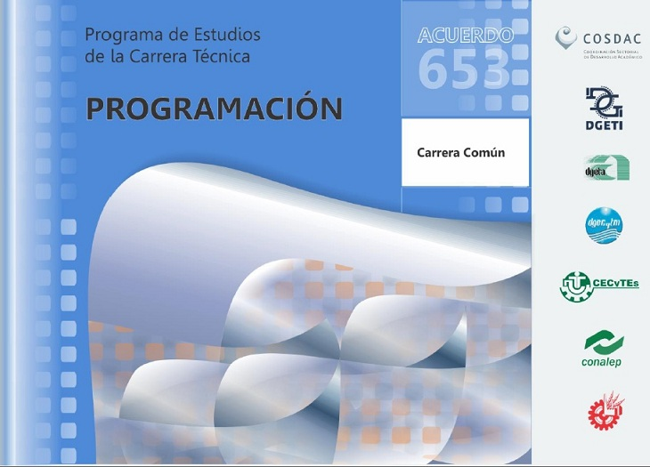

Especialidades que ofrece el CBTis16

Aplicacion Dos
Uriel Campeche Gonzalez 6to "G"
Programacion de la Especialidad de Programacion CBTis 16
Perfil de Egreso
La formacion que ofrece la carrera de Tecnico en programacion permite al egresado , atraves de la articulacion de saberes de datos versos campos realizar actividades dirigidas a la :
- Instalacion y desarrollo de software de aplicacion utilizando programacion estructurada y orientada a objetos en ambientes web y moviles con almacenamiento percistente de datos,
- Asi como la configuracion y administrativo de plataforma e learning y
- Comercio Electronico
Durante el proceso de formacion de los cinco modulos, el estudiante desarrolla y reforzara
las siguientes competencias profecionales
- Desarrolla e instala software de aplicacion utilizando programacion estructurada con almacenamiento persistente de los datos
- Desarrolla software de aplicacion utilizando programacion orientada a objetos,con almacenamiento persistentede datos
- Administra Sistemas operativos, aplicaciones y servicios
- Desarrolla , administra y configura soluciones de e-kearning y comercio electronico

Aplicacion Dos
Uriel Campeche Gonzalez del 6o "G"
Modulo I
Desarrolla e instala software de aplicaciones utilizando programacion estructurada,con almacenamiento persistente de los dato
Aplicacion Dos,Uriel Campeche Gonzalez
Modulo II
Desarrolla software de aplicacion utilizando programacion orientada a objetos , con almacenamiento persistente de datos
Aplicacion Dos,Uriel Campeche Gonzalez
Modulo III
Desarrolla aplicaciones web y moviles
Aplicacion Dos,Uriel Campeche Gonzalez
Modulo IV
Administra sistemas operativos de aplicacion y de servicios
Aplicacion Dos,Uriel Campeche Gonzalez
Modulo V
Desarrolla y administra y configura soluciones de e-learning y comercio electrico
Aplicacion Dos,Uriel Campeche Gonzalez
Programacion de la Especialidad de Electricidad CBTis 16
Perfil de Egreso
Durante el proceso de formacion de los cinco modulos, el estudiante desarrollara o reforzara la sigientes competencias profecionales, correspondiente al tecnico de electricidad
- Desarrolla instalaciones electronicos recidenciales y comerciales
- Mantenie los motores y generadores de CA y CC,
- antiene en operacion los cicuitos de control elctormagneticos y electronico,
- Mantiene los sistemas de iluminacion y de energia renovable y
- Mantiene instalaciones electricas de media y baja tencion
- Ademas se presentan las 11 competencias genericas, para usted intervenga en su desarrollo enriquezac el perfil d egreso del bachillerato .Como resultado de analisis realizado por los docentes elaborados de este programa de estudios , se considera que el egresado de la carrera de tectinco en electricidad esta en posibilidades de desarrollo las competecias genericas antes mencinadas Sin embargo se deja abierta la posibilidad de que usted contribuya a la adquisicion de otras que considera de acuerdo con el contexto regional y laboral y academico.
- 1.-Se Conoce y valora asi mismo y aborda problemas y retos teniendo en cuenta los objetos persigue.
- 2.-Es sensible al atre y practica en la apreciacion e interpretacion de sus expreciones en distintos generos
- 3.-Escoge la practica y estilos de vida saludable
- 4.-Escucha,interpreta y emite mensajes pertienentes en disintos contextos mediante la utilizaciones de medios codigos y herramientas apropiadas
- 5.-Desarrolla innovaciones y propone soluciones a problemas a partir de metodos establecidos
- 6.-Sutenta una postura personal sobre temas de ineres y relevancia general y concidera dos puntos de vista crititca y reflexiva.
- 7.-Aprende por iniiciativa a interes propio a lo largo de la vida.
- 8.-Participa y colabora de manera efectiva enequipos diversos.
- 9.-Participa con una conciencia civica y etica en la vida de su comunidad o region.
- 10.-Mantiene una actitud respetuosa hacia la interculturalidad y la diversisdad de creecias , valores,ideas y practicas sociales.
- 11.-Construye al desarrollo sustentable de manera critica en acciones responsables.
- Es importante recordar que en este modelo educativo media superior.
Aplicacion Dos
Uriel Campeche Gonzalez del 6o "G"
Modulo I
Desarrolla instalaciones electricas residnciales y comerciales
Aplicacion Dos,Uriel Campeche Gonzalez
Modulo II
Mantiene los motores y generadores de ca y cc
Aplicacion Dos,Uriel Campeche Gonzalez
Modulo III
Mantiene en operacion los circuitos de control electromagnetico y electronico
Aplicacion Dos,Uriel Campeche Gonzalez
Modulo IV
Mantiene los sistemas de iluminacion y de energia renobable
Aplicacion Dos,Uriel Campeche Gonzalez
Modulo V
Mantiene intelaciones electronicas de media y baja tencion
Aplicacion Dos,Uriel Campeche Gonzalez
Programacion de la Especialidad de Logistica CBTis 16
Perfil de Egreso
La informacion que ofrece la carrera de tecnico enlogistica permite al egresado a traves de la articulacion de saberes de diversos campos , realizar actividades dirigidas a la supervision evaluacion, control y segimiento del proceso logistico aplicable al comercio de mecacnicos a realizar actividades dirigidas a la supervision.
- Supervisa el proceso de suministros de vienes
- Apoya en el proceso de administracion de almacenamiento de bienes
- Organiza el tranporte de mercancias
- Provee servicio y atencion al cliente
- Organiza los costos de la cadena logistica y competencias
- Atencion al proceso
- Planea y organizacion
- Etica Profecional
- Comunicacion efectiva
- Trabajo de equipo
Aplicacion Dos
Uriel Campeche Gonzalez del 6o "G"
Modulo I
Supervisa el proceso de suministro de vienes
Aplicacion Dos,Uriel Campeche Gonzalez
Modulo II
Apoya en el proceso de administrar el servcio de almacenaje de vienes
Aplicacion Dos,Uriel Campeche Gonzalez
Modulo III
Organiza tranporte de mecanica
Aplicacion Dos,Uriel Campeche Gonzalez
Modulo IV
Provee servicios y atencion al cliente sobre movimientos de logistica
Aplicacion Dos,Uriel Campeche Gonzalez
Modulo V
Apoya en el calculo de los costos de la cadena de logistica
Aplicacion Dos,Uriel Campeche Gonzalez
Programa de Especialidad de Mecanica Idustrial CBTis 16
Perfil de Egreso
Durante el proceso de formacion de los cinco modulos el estudiante desarrollara o reforzara los sigueintes competencias profecionales
- Suelda y ajusta piezas mecanicas
- Maqiona piezas mecanicas en talador y torno
- Maquina piezas mecanicas en fresadora rectificadora y cepillo
- Maquina piezas mecanicas por CNC
- Mantiene sistemas de transmision de potencia ademas se presentan a las 11 competencias genericas
- 1.-Se Conoce y valora asi mismo y aborda problemas y retos teniendo en cuenta los objetos persigue.
- 2.-Es sensible al arte y practica en la apreciacion e interpretacion de sus expreciones en distintos generos
- 3.-Escoge la practica y estilos de vida saludable
- 4.-Escucha,interpreta y emite mensajes pertienentes en disintos contextos mediante la utilizaciones de medios codigos y herramientas apropiadas
- 5.-Desarrolla innovaciones y propone soluciones a problemas a partir de metodos establecidos
- 6.-Sutenta una postura personal sobre temas de ineres y relevancia general y concidera dos puntos de vista crititca y reflexiva.
- 7.-Aprende por iniiciativa a interes propio a lo largo de la vida.
- 8.-Participa y colabora de manera efectiva enequipos diversos.
- 9.-Participa con una conciencia civica y etica en la vida de su comunidad o region.
- 10.-Mantiene una actitud respetuosa hacia la interculturalidad y la diversisdad de creecias , valores,ideas y practicas sociales.
- 11.-Construye al desarrollo sustentable de manera critica en acciones responsables.
- Es importante recordar que en este modelo educativo media superior.
Aplicacion Dos
Uriel Campeche Gonzalez del 6o "G"
Modulo I
Suelda y ajusta piezas mecanicas
Aplicacion Dos,Uriel Campeche Gonzalez
Modulo II
Maquina piezas mecanicas en taladros y torno
Aplicacion Dos,Uriel Campeche Gonzalez
Modulo III
Maquina piezas mecanicas en fresadoras, recifradora y cepillo
Aplicacion Dos,Uriel Campeche Gonzalez
Modulo IV
Maquina piezasmecanicas por cnc
Aplicacion Dos,Uriel Campeche Gonzalez
Modulo V
Mantenimientoe sistemas de trancision de potencia
Aplicacion Dos,Uriel Campeche Gonzalez